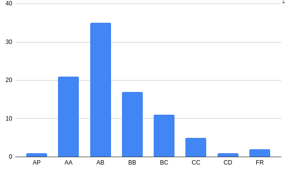

Grading

Grading :previous offering by prof. Patkar(genral trend is similar)
Course Structure
Makring scheme:
DD:
Grading: Btech
- ~15% for quizes
- ~10% for assignments
- ~25-30% midsem
- ~40-45% endsem
Course Content
Basics of digital logic,HDL and Verilog Implementation
Combinational Circuits
Sequential Circuits/li>
Digital System Design
Digital System Testing